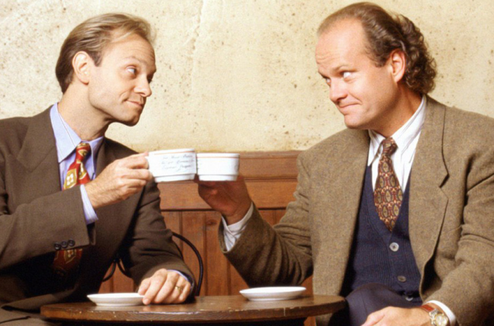
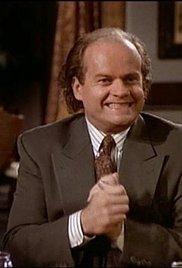

I <3 Frasier
I feel like most TV-watching people that one show that they put on as a comfort. It's usually one they've seen too many times to count. They know the characters by heart, know what happens in which season, and are quick with references to the show in the day-to-day. My comfort show is Frasier.
Why Frasier?
A friend got me into the show. Before then, I had only seen a few episodes, but she gave me an entire hard drive of movies and series, including all 11 seasons of Frasier. At the time, I was living in Spain, so the American voices, allusions, and humor offered a familiar respite from crossing cultures. It quickly became a habit to watch a few episodes here and there, and I was soon hooked.
Characters
- Dr. Frasier Crane - noted radio psychiatrist, lovable snob, and former barfly on another sitcom called Cheers; played by Kelsey Grammer
- Dr. Niles Crane - Frasier's younger brother, also a psychiatrist, also a lovable snob and germaphobe; played by David Hyde Pierce
- Martin Crane - Frasier's dad, a former cop that has to live with Frasier due to a gunshot-wounded hip; nothing like his two snobbish sons; played by John Mahoney
- Daphne Moon - colorful, English, live-in physical therapist and housekeeper; played by Jane Leeves
- Roz Doyle - Frasier's radio show producer and sexually adventurous friend; played by Peri Gilpin
- Eddie - Martin's beloved Jack Russell terrier and Frasier's recurring nemesis; played by Moose and then Enzo
Frasier Facts
Here are 3 sites where you can find out more about this hilarious, award-winning show:
- FrasierWiki
- A very interesting Mental Floss Listicle
- List of Award Nominations and Wins
